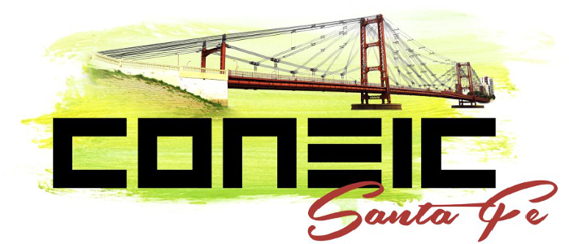
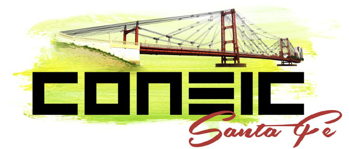

ANEIC La Asociación Nacional de Estudiantes de Ingeniería Civil (ANEIC) es una agrupación civil autónoma, de carácter científico, tecnológico y cultural sin fines de lucro y ajena a toda actividad política partidaria o religiosa. La ANEIC está consolidada en muchos países latinoamericanos, donde se promueve el desarrollo integral de los mismos, principalmente en los aspectos académicos, ético y cultural. Con el fin de fomentar en el estudiante su constante superación y el compromiso social en su país. Estas asociaciones nacionales se encuentran actualmente nucleadas en la Asociación Latinoamericana de Estudiantes de Ingeniería Civil (ALEIC). ANEIC Santa Fe. En nuestra Ciudad, desde el año 2009, se trabaja activamente para lograr la conformación de la Asociación Local (ANEIC Santa Fe). Gracias a dicho trabajo, se ha logrado que hoy en día, los alumnos de la carrera tengan la posibilidad de participar de diversas actividades académicas y recreativas, favoreciendo al crecimiento personal y profesional.